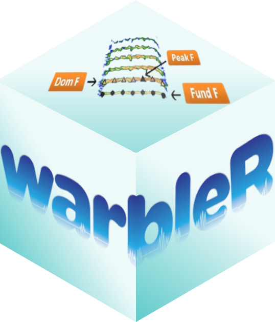

warbleR is an R package for analyzing the structure of animal acoustic signals at scale. Bring your own recordings (or open-access ones from repositories like Xeno-canto, easily obtained with suwo), annotate them in a selection table, and run the whole pipeline — from file wrangling and spectrograms to acoustic measurements and similarity analyses — in batch, on as many signals as you have.
Built on top of seewave and tuneR, warbleR adds the workflow layer those packages leave to the user:
- 🗂️ Selection-table-driven workflows — every function loops over the signals listed in an annotation table, so one call handles one sound or ten thousand
- 📦 Extended selection tables — a single R object that bundles annotations and the audio clips, making analyses portable and easy to share
- ⚡ Parallel processing — most functions take a
parallelargument to spread the work across cores - 🔍 Built-in quality checks — spectrogram images and diagnostic tools let you verify each step before moving on
What can you do with it?
| Task | Key functions |
|---|---|
| Inspect, convert and fix sound files |
info_sound_files(), check_sound_files(), fix_wavs(), mp32wav(), wav_2_flac(), split_sound_files(), remove_channels()
|
| Build and validate annotation tables |
selection_table(), check_sels(), tailor_sels(), cut_sels(), overlapping_sels(), consolidate()
|
| Create spectrograms |
spectrograms(), full_spectrograms(), color_spectro(), snr_spectrograms(), catalog(), phylo_spectro()
|
| Measure acoustic structure |
spectro_analysis(), mfcc_stats(), song_analysis(), freq_range(), sig2noise(), sound_pressure_level(), gaps(), wpd_features()
|
| Track frequency contours |
freq_ts(), track_freq_contour(), track_harmonic(), inflections()
|
| Compare signals |
cross_correlation(), freq_DTW(), multi_DTW(), waveform_similarity(), compare_methods()
|
| Analyze duet / chorus coordination |
test_coordination(), plot_coordination()
|
| Simulate signals | simulate_songs() |
See the function reference for the full list.
Installation
From CRAN:
install.packages("warbleR")Development version from GitHub (requires remotes):
remotes::install_github("maRce10/warbleR")Quick example
The example recordings and annotations come from the NatureSounds package (installed with warbleR):
library(warbleR)
# load example long-billed hermit songs and their annotations
data(list = c("Phae.long1", "Phae.long2", "Phae.long3", "Phae.long4", "lbh_selec_table"))
# save the sound files to a temporary folder
for (i in paste0("Phae.long", 1:4)) {
tuneR::writeWave(get(i), file.path(tempdir(), paste0(i, ".wav")))
}
# check that annotations and sound files match
check_sels(lbh_selec_table, path = tempdir())
# measure spectral and temporal parameters for every annotated signal
params <- spectro_analysis(lbh_selec_table, path = tempdir())
# pairwise acoustic similarity via spectrographic cross-correlation
xc <- cross_correlation(lbh_selec_table, path = tempdir())Learn more
- 📘 Intro to warbleR — an overview of the package
- 📝 Annotation data format — how input annotations (selection tables) should look
- 🔁 All vignettes — worked examples of complete analysis workflows
- 📄 Original paper in Methods in Ecology and Evolution (the package has grown a lot since, so check the vignettes for current usage)
Related packages
| Package | What it does |
|---|---|
| seewave & tuneR | Core sound analysis and manipulation of wave objects in R |
| ohun | Automated detection of sound events, with tools to diagnose and optimize detection routines |
| suwo | Search, download and map nature media (Xeno-canto, Macaulay Library, iNaturalist, GBIF, WikiAves) — replaces warbleR’s query_xc() and map_xc()
|
| baRulho | Quantifying habitat-induced degradation of acoustic signals, with inputs/outputs compatible with warbleR |
| Rraven | Data exchange between R and Raven (Cornell Lab of Ornithology), handy for using Raven as the annotation tool |
| dynaSpec | Dynamic spectrograms (spectrogram videos) |
| NatureSounds | Example recordings and annotations of animal sounds |
Getting help & contributing
Found a bug or have a feature request? Please open an issue. Contributions are welcome — see the contributing guidelines.
Citation
If you use warbleR, please cite:
Araya-Salas, M. & Smith-Vidaurre, G. (2017). warbleR: an R package to streamline analysis of animal acoustic signals. Methods in Ecology and Evolution, 8, 184–191. https://doi.org/10.1111/2041-210X.12624
Please also cite tuneR and seewave if you use any function that creates spectrograms or measures acoustic parameters. You can get all citations from R with citation("warbleR").